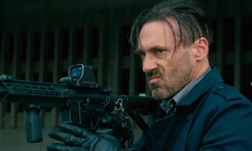
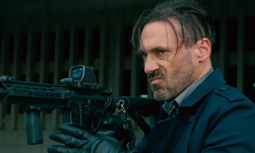

Story
Talented getaway driver Baby (Ansel Elgort) relies on the beat of his personal soundtrack to be the best in the game. After meeting the woman (Lily James) of his dreams, he sees a chance to ditch his shady lifestyle and make a clean break. Coerced into working for a crime boss (Kevin Spacey), Baby must face the music as a doomed heist threatens his life, love and freedom.

Gallery

 

Trailer
Cast
Ansel Elgort

Jon Bernthal

Jon Hamm
Eiza Gonzalez

Lily James

Kevin Spacey

Soundtrack